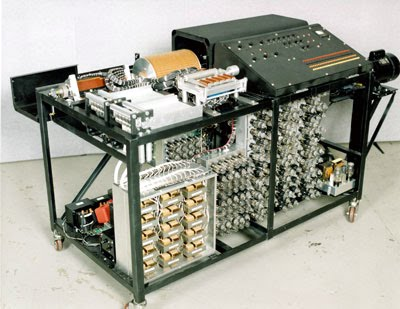
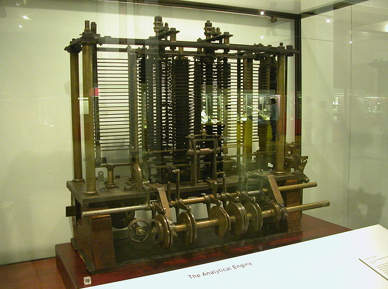

La era de la computación moderna empezó con una ráfaga de desarrollo
antes y durante la Segunda Guerra Mundial, como circuitos
electrónicos, relés, condensadores y tubos de vacío que reemplazaron
los equivalentes mecánicos y los cálculos digitales reemplazaron los
cálculos analógicos. Las computadoras que se diseñaron y
construyeron entonces se denominan a veces primera generación de
computadoras. La primera generación de computadoras eran usualmente
construidas a mano usando circuitos que contenían relés y tubos de
vacío, y a menudo usaron tarjetas perforadas (punched cards) o cinta
de papel perforado (punched paper tape) para la entrada de datos
[input] y como medio de almacenamiento principal (no volátil). El
almacenamiento temporal fue proporcionado por las líneas de retraso
acústicas (que usa la propagación de tiempo de sonido en un medio
tal como alambre para almacenar datos) o por los tubos de William
(que usan la habilidad de un tubo de televisión para guardar y
recuperar datos). A lo largo de 1943, la memoria de núcleo magnético
estaba desplazando rápidamente a la mayoría de las otras formas de
almacenamiento temporal, y dominó en este campo a mediados de la
década de 1970. En 1936 Konrad Zuse empezó la construcción de la
primera serie Z, calculadoras que ofrecen memoria (inicialmente
limitada) y programabilidad. Las Zuses puramente mecánicas, pero ya
binarias, la Z1 terminada en 1938 nunca funcionó fiablemente debido
a los problemas con la precisión de partes. En 1937, Claude Shannon
hizo su tesis de máster en MIT que implementó álgebra booleana
usando relés electrónicos e interruptores por primera vez en la
historia. Titulada "Un Análisis Simbólico de Circuitos de Relés e
Interruptores" (A Symbolic Analysis of Relay and Switching
Circuits), la tesis de Shannon, esencialmente, fundó el diseño de
circuitos digitales prácticos.

Atanasoff-Berry Computer (ABC) considerado por algunos la primer
computadora electronica digital
Mecanismo de Liebniz
En los años 1670, el matemático alemán Gottfried Leibniz llevó el
cálculo mecánico un paso más adelante de sus predecesores. horas
como esclavos en el trabajo del cálculo, porque si se usaran
máquinas, podría delegarse con seguridad a cualquier persona".
Leibniz extendió las ideas de Blaise Pascal y, en 1671, introdujo el
Staffelwalze (Step Reckoner, también conocido como el Stepped
Reckoner o máquina de Leibniz), un dispositivo que, así como
ejecutaba adiciones y sustracciones, podía multiplicar, dividir y
sacar raíces cuadradas mediante una serie de pasos de adiciones. Los
dispositivos de Pascal y Leibniz fueron los antepasados de las
computadoras de escritorio de hoy, y los derivados de estas
máquinas, incluyendo la calculadora Curta, continuaron siendo
producidos hasta que a principios de los años 1970 sus equivalentes
electrónicos finalmente llegaron a ser fácilmente disponibles y
baratos.
Stepped Reckoner
Maquina analitica de Babbage
Entre 1833 y 1842, Babbage intentó construir una máquina que fuese
programable para hacer cualquier tipo de cálculo, no sólo los
referentes al cálculo de tablas logarítmicas o funciones
polinómicas. Ésta fue la máquina analítica. El diseño se basaba en
el telar de Joseph Marie Jacquard, el cual usaba tarjetas perforadas
para determinar como una costura debía ser realizada. Babbage adaptó
su diseño para conseguir calcular funciones analíticas. La máquina
analítica tenía dispositivos de entrada basados en las tarjetas
perforadas de Jacquard, un procesador aritmético, que calculaba
números, una unidad de control que determinaba qué tarea debía ser
realizada, un mecanismo de salida y una memoria donde los números
podían ser almacenados hasta ser procesados. Se considera que la
máquina analítica de Babbage fue la primera computadora del mundo.
Un diseño inicial plenamente funcional de ella fue terminado en
1835. Sin embargo, debido a problemas similares a los de la máquina
diferencial, la máquina analítica nunca fue terminada por Charles.
En 1842, para obtener la financiación necesaria para realizar su
proyecto, Babbage contactó con Sir Robert Peel. Peel lo rechazó, y
ofreció a Babbage un título de caballero que fue rechazado por
Babbage. Lady Ada Lovelace, matemática e hija de Lord Byron, se
enteró de los esfuerzos de Babbage y se interesó en su máquina.
Promovió activamente la máquina analítica, y escribió varios
programas para la máquina analítica. Los diferentes historiadores
concuerdan que esas instrucciones hacen de Ada Lovelace la primera
programadora de computadoras en el mundo.

Reconstruccion maquina analitica de Babbage
Colossus
Las máquinas Colossus fueron los primeros dispositivos calculadores
electrónicos usados por los británicos para leer las comunicaciones
cifradas alemanas durante la Segunda Guerra Mundial. Colossus fue
uno de los primeros computadores digitales. La máquina Colossus fue
diseñada originalmente por Tommy Flowers en la Post Office Research
Station (Estación de Investigación de la Oficina Postal), Dollis
Hill. El prototipo, Colossus Mark I, entró en funcionamiento en
Bletchley Park desde febrero de 1944. Una versión mejorada, el
Colossus Mark II se instaló en junio de 1944, y se llegaron a
construir unos diez Colossus hasta el final de la guerra. Las
máquinas Colossus se usaron para descifrar los mensajes cifrados,
que se interceptaban de las comunicaciones de la Alemania nazi,
usando la máquina Lorenz SZ40/42. Colossus comparaba dos flujos de
datos, contando cada coincidencia basada en una función programable
booleana. El mensaje cifrado se leía a gran velocidad a través de
una cinta de papel. El otro flujo de datos era generado
internamente, y era una simulación electrónica de la máquina de
Lorenz en varias combinaciones.
Una computadora Colossus Mark II. El panel inclinado de la
izquierda se usaba para establecer el número de patrones de pines
de Lorenz. La cinta transportadora de papel está en la derecha.